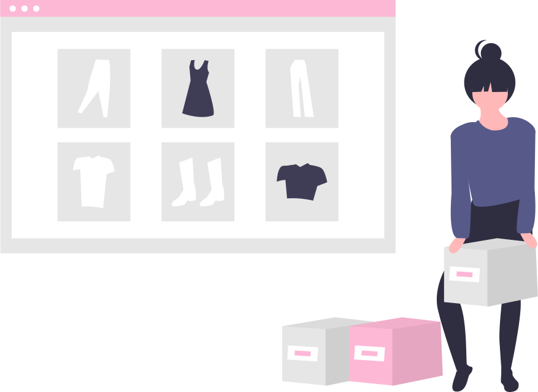

- Fast Fashion -
What is Fast Fashion?
In 2006, the International Fashion Trend Research Center announced that "fast and fashionable" will become the development trend of the clothing industry in the next ten years. Fast fashion has four main characteristics, including the rapid provision of popular styles and elements, low prices, large models, and small quantities, to stimulate consumer interest and maximize consumer demand. It can be said that fast fashion is a product of the four social trends of globalization, democratization, youth and the Internet.
Brands of Fast Fashion
The Impact of Fast Fashion
- Slow Fashion -
What is Slow Fash?
Slow fashion is the idea of making fashion sustainable. The word "slow" in this phrase doesn't literally refer to the pace of speed. Instead, it is about the focus on clothing quality, durability, and all-match features comparing with "fast" fashion, which is usually produced massively and has a seasonal marketing strategy.
In addition to using renewable and eco-friendly ingredients for production, slow fashion clothes are usually produced in an ethical way. Practicing fair trade while having no exploitation of laborers nor mass production, slow fashion showed the unique value of garments itself. Moreover, slow fashion clothes feature basic and simple designs that will never fall out of trend and could let you shine on your own style while being eco-friendly at the same time.
Why is Slow Fashion?
The core of slow fashion is a combination of sustainable fashion and ethical fashion. With our passion for fashion, we surely have no reason to let our eco-system and laborers fall into the victims of fashion trends.
Slow fashion makes sustainable fashion more than just an idea, but the true practice from clothing production to marketing till the moment you put it on.
With the focus of high-quality clothes, the true meaning behind the phrase "slow fashion" are the ways to make fair trade, eco-production, and sustainable development all come true.
Therefore, please "slow" down with us. Feel the true beauty of clothes while making an effort for the environment.
How to Slow Fashion?
Must-have item
As unpredictable as a fashion trend is, blind following it will only cost you your own unique style. In these constantly changing fashion trends, only simple and classic items could last long. In addition to plain T-shirts and jeans, must-have items that are the simply designed pieces that fit you the most base on your own style.
OOTDS(outfit of these days)
Have you ever stare at piles of clothes but feel like having nothing to wear? This is probably the daily description of many of us. With enormous clothes but not knowing what to wear, so people just buy, again and again, causing unnecessary waste on clothes.
However, the truth is even one simple item could give you hundreds of fashionable looks. Therefore, repeat OOTD is not boring at all! With different accessories, there's a high chance that you can be creative and create your unique style on your everyday outfits.
Quality>quantity
Needed > wanted
Stop over purchasing clothes! Here are the questions you need to consider before making a purchase. Do I really need it? Do I have similar ones? Will I constantly wear it? Just think before you leap! Don't fall into the devil of impulse, and find that the clothes you bought just end up lying at the bottom of your wardrobes without wearing even once.
Quality>quantity
Instead of buying cheap, low quality, high disposable rate clothes, we recommend more expensive but high quality and well-designed ones. In a long-term perspective, it not only saves unnecessary waste but also lessens environmental burdens for disposing of clothes.
- Our Spirit -
" Less is More.
From Fast to Slow. "
- About Us -
We are five students from the Department of Communication and Technology of NCTU, who love fashion and care about the environment. At the beginning, we were just worried that our wardrobe is always full, but we always don't know what to wear. Hoping that through the sell of second-hand clothing, the value of the clothing itself can be continued. While distressed, we gradually began to reflect on, why is everyone troubled with full wardrobes? If everyone's wardrobe is full, do we still need to make a lot of clothes? And in the process of continuously manufacturing and discarding clothes, how much waste have we caused? Is there a way to improve this problem, which is not limited to individuals, but to improve the common problems of the whole society?
When thinking about solutions and searching for information, we found out how much fashion waste was caused by human waste clothes every year, and how much it harm the environment. Therefore, we discovered the concept of "slow fashion". Between fashion and sustainability, we saw a possibility of achieving a balance.
Therefore, We are committed to understanding the story behind each piece of clothing production and believe that "slow fashion" is not only a choice when buying clothes, but also a way of life It is a fashion attitude that everyone should have!
By promoting "slow fashion", we want to bring people better clothes and quality of life, while also saving unnecessary waste for the environment. Through the transmission of ideas, let "slow fashion" become the power to change the world!
So please slow down and experience the purest beauty of the clothes with us!